Documents médico-administratifs
L'ajout d'un document
L’ensemble des documents nécessaires à la prise en charge médicale, administrative et réglementaire des patients, est centralisé et géré depuis le module Documents médico-administratifs.
Ces documents peuvent être ajoutés depuis la consultation médicale ou depuis le dossier patient, en fonction du contexte.
Des modèles d’ordonnances peuvent être crées depuis les “Paramètres” du logiciel. Les différentes ordonnances.
Celles-ci seront alors préremplies lors de la consultation à partir des éléments clés. Les variables étant automatiquement complétées par l’IA. Chaque proposition sera soumise à validation par l’utilisateur avant enregistrement.
Celles-ci seront alors préremplies lors de la consultation à partir des éléments clés. Les variables étant automatiquement complétées par l’IA. Chaque proposition sera soumise à validation par l’utilisateur avant enregistrement.
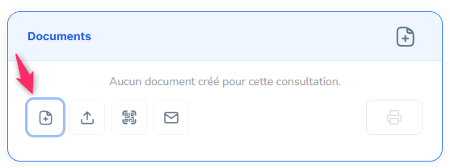
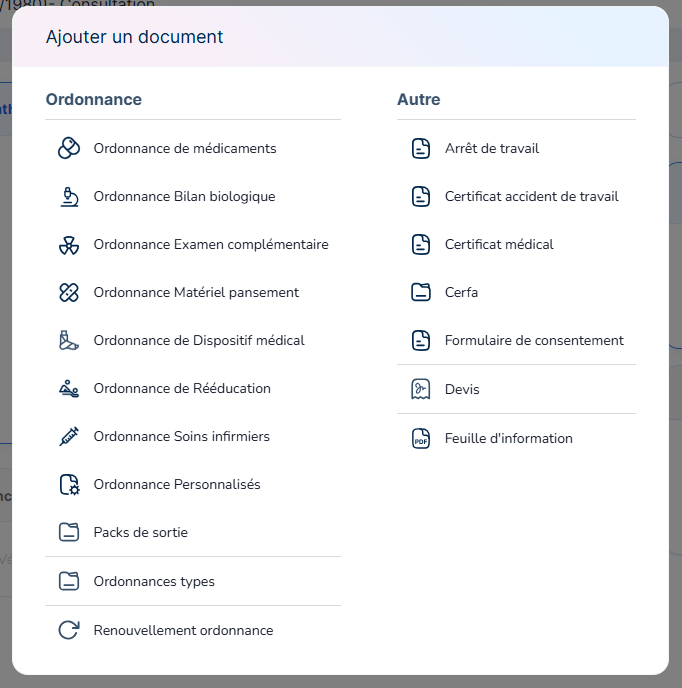
Cette action ouvre un menu permettant de choisir le mode d’ajout du document, soit manuellement (l’utilisateur saisit ou importe l'élément souhaité), soit par le bouton de “génération intelligente” après avoir dicté la consigne (le document est produit automatiquement par l’IA).
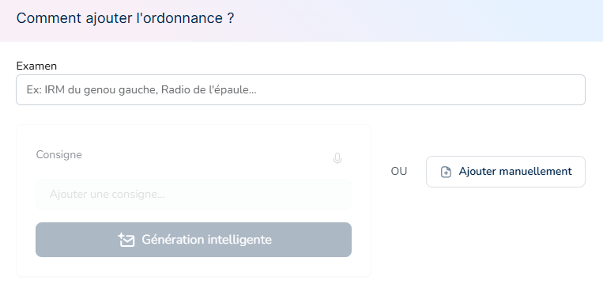
La page de Documents permet la création ou la validation de l’ordonnance voulue.
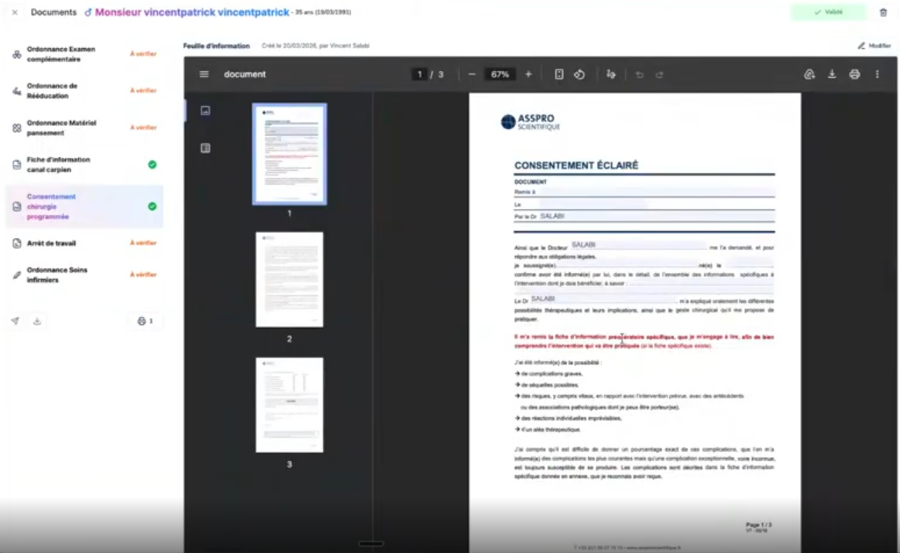
Les documents ajoutés sont automatiquement rattachés au patient et à l’événement médical concerné. Ils peuvent aussi être téléchargés sur l’ordinateur, ainsi qu’adresser par messagerie.
Les différentes ordonnances
L'ordonnance de médicament
Accéder à l’ordonnance de médicaments
L'ordonnance de médicaments est accessible depuis deux emplacements :
- Le module documentaire
- Le suivi du traitement, disponible dans les informations du patient — depuis la page d'un événement ou depuis le dossier patient.
Elle s’appuie sur l'outil de prescription intégré : POSOS.
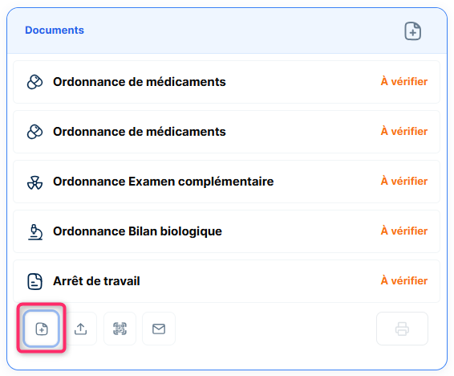
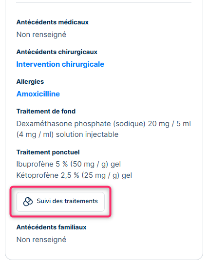
Depuis le module documentaire, il est possible d’ajouter l’ordonnance en saisissant l’intitulé d’un modèle pré-enregistré, ou de la créer manuellement. La page Documents s’affiche permettant d'éditer/modifier l’ordonnance souhaitée.
Ajouter un médicament (widget POSOS)
La prescription médicamenteuse s’effectue via le widget POSOS, intégré directement à l’interface de MIA Experts
Il permet de rechercher et sélectionner les médicaments de manière sécurisée.
Vérification des interactions et alertes
Le widget POSOS analyse automatiquement :
- les interactions médicamenteuses
- les contre-indications
- les alertes de sécurité.
Ces vérifications contribuent à la sécurisation de la prescription.
Finaliser et enregistrer l’ordonnance
Une fois la prescription complétée, l’ordonnance peut être validée et enregistrée. Elle est alors ajoutée au dossier patient et disponible pour impression ou transmission.
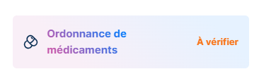
Mise en forme de l’ordonnance & mentions légales obligatoires
Lors de la finalisation d’une ordonnance de médicaments dans MIA Experts, plusieurs modes de mise en forme légale sont proposés afin de s’adapter aux exigences réglementaires et aux contextes de prescription.
Les options de mise en forme disponibles sont les suivantes :
- Mise en forme classique
L’ordonnance comporte l’en-tête du praticien, les informations administratives du patient ainsi que l’ensemble des éléments réglementaires requis.
- Mise en forme sans en-tête
Cette option est destinée notamment aux ordonnances sécurisées, pour lesquelles l’en-tête du praticien ne doit pas apparaître sur le document.
- Mise en forme sans informations patient
Cette option permet de générer une ordonnance sans affichage des informations administratives du patient, lorsque le contexte de prescription l’exige.

Quel que soit le mode sélectionné, les mentions légales obligatoires sont automatiquement intégrées par le système, garantissant la conformité réglementaire de l’ordonnance.
L’utilisateur n’a pas à gérer manuellement ces mentions : leur ajout est systématique et dépend des règles en vigueur.
Les ordonnances paramédicales
Ordonnances d’examens complémentaires et Bilan biologique
Les ordonnances d’examens complémentaires permettent de prescrire des examens d’imagerie, biologiques ou fonctionnels. Elles sont générées depuis le module documentaire et sont intégrées au dossier patient.
Ordonnances de soins / rééducation / matériel pansement
Ce type d’ordonnance est utilisé pour prescrire des séances de soins, de rééducation ou de suivi paramédical. Les informations patient et praticien sont automatiquement reprises, garantissant la conformité du document.
Ordonnances de Dispositif médical
Ordonnances personnalisées
Les ordonnances personnalisées permettent de créer des prescriptions libres adaptées à des situations spécifiques, hors modèles standardisés. Elles offrent une grande souplesse tout en restant intégrées au circuit documentaire.
Ordonnances types (packs d’ordonnances)
Les ordonnances types, également appelées packs d’ordonnances, permettent de générer en une seule action un ensemble cohérent de prescriptions. Ces packs sont configurables selon les préférences de l’utilisateur et les pratiques chirurgicales ou médicales.
Les documents divers
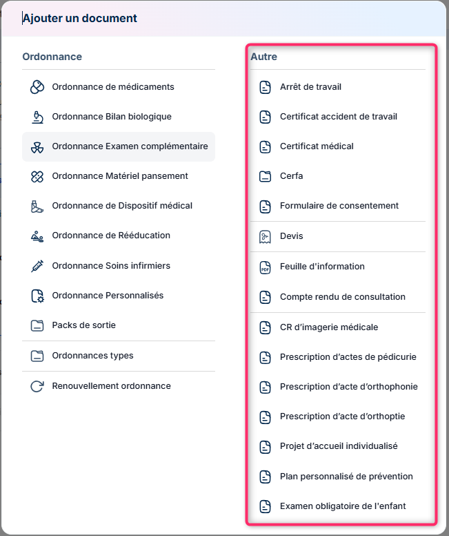
L'arrêt de travail
La préparation de l’arrêt de travail s’effectue directement depuis le logiciel, connecté à AmeliPro. Il n’est donc pas nécessaire de se connecter séparément à la plateforme, l’arrêt de travail est généré puis transmis depuis l’interface.
Ce module permet de générer le document conformément aux exigences réglementaires. L’utilisateur peut définir la période d’arrêt directement depuis l’interface.
Lors de sa création, il est possible de préciser :
- La durée de l’arrêt
- Les modalités de sortie
- Les informations liées à l’employeur
Ces paramètres assurent la conformité administrative du document.
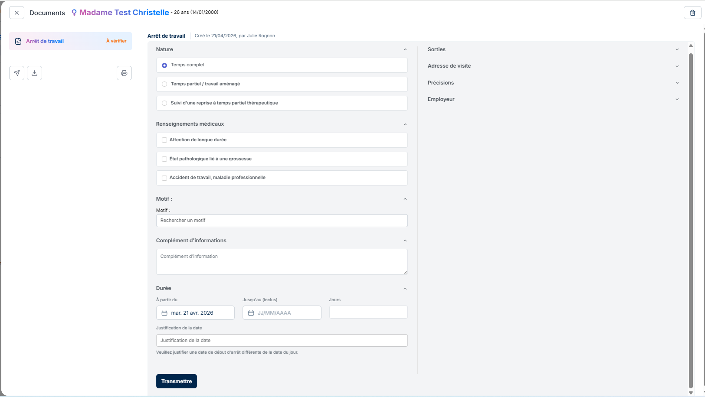
Certificats médicaux
Les certificats médicaux peuvent être générés selon différents contextes (aptitude, contre-indication, suivi médical).
Ils sont archivés automatiquement dans le dossier patient.
CERFA
Un formulaire CERFA peut être ajouté parmi le listing proposé
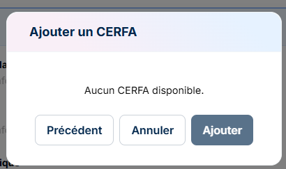
Formulaire de consentement opératoire
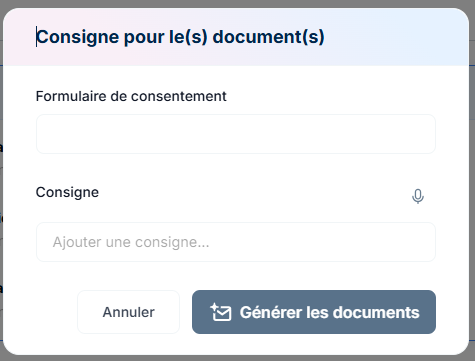
Devis
Le module devis permet de créer et suivre les devis liés aux actes médicaux ou chirurgicaux. Les devis sont intégrés au dossier patient et peuvent être associés à une intervention programmée
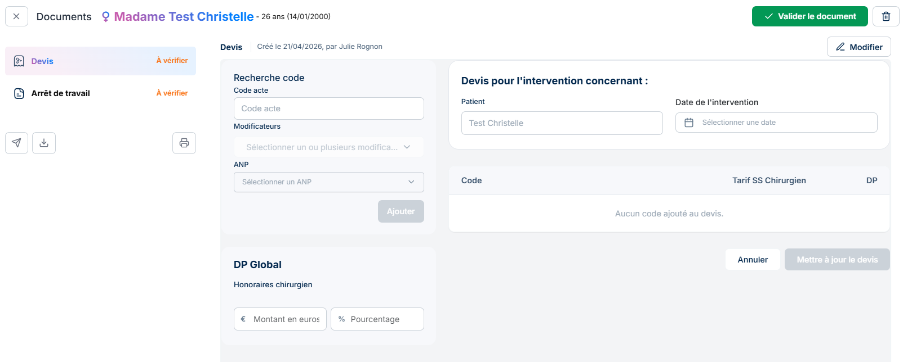
Feuille d’information
Les feuilles d’information patient servent à transmettre des informations claires sur une pathologie, un acte ou une prise en charge.
Elles peuvent être personnalisées ou issues de modèles prédéfinis dans les Paramètres du logiciel.